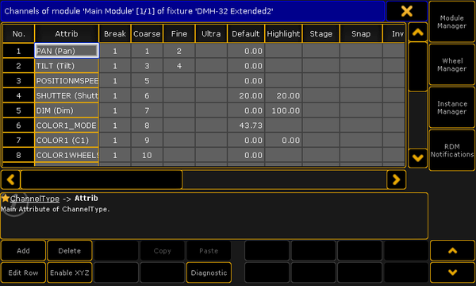
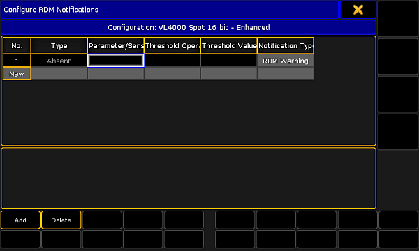
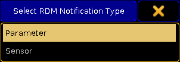
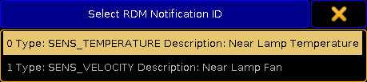
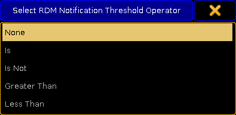
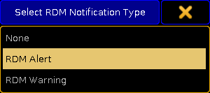
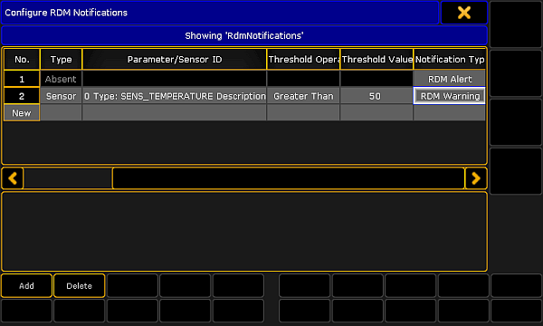

You can add or delete RDM notifications to or from the fixture types. RDM notification can be add for RDM parameters and for RDM sensors. Choose if the notification should be an RDM alert (displayed in red) or an RDM warning (displayed in yellow). The RDM notification are applied for all fixtures of the fixture type.
Depending on the settings in the windows, the RDM notifications icons are displayed in the:
RDM Messages, go to Setup -> Patch & Fixture Schedule -> RDM Devices -> RDM Info -> Messages or type RdmInfo in the command line and tap Messages.
Add RDM notifications
The following example will explain how to add an RDM notification.
Requirements:
RDM is turned on
Fixture is matched
Fixture is patched
Open the Fixture Type Editor.
- Press Setup, and tap under Show at Patch & Fixture Schedule.
- Tap on the right screen side at Fixture Types.
- Tap at the fixture type in the table you like to add a notification to and tap Edit.
The Fixture Type Editor opens.

Fixture Type Editor
Tap on the right screen side RDM Notifications.
The Configure RDM Notifications window opens.
Absent is an RDM warning by default and can not be deleted. You can change the RDM Notification Type. The Absent warning appears if the RDM device is not reachable anymore.

Configure RDM Notifications window
Tap Add or tap in the cell of the column Type and press the screen encoder.
The Select RDM Notification Type pop-up opens.

Select RDM Notification Type pop-up
Tap at Parameter or Sensor, depending for what type you want to add an RDM notification. To edit the next cell, tap at the Parameter/Sensor ID cell and press the screen encoder.
The Select RDM Notification ID pop-up opens.

Select RDM Notification ID pop-up
Tap at the Parameter or Sensor you like to add an RDM notification for. To edit the next cell, tap at the Threshold Operator cell and press the screen encoder.
The Select RDM Notification Threshold Operator pop-up opens.

Select RDM Notification Threshold Operator
Select when the RDM notification should appear: - None: No RDM Notificaiton. - Is: If exactly the threshold value is reached. - Is Not: If any value but not the threshold value is reached. - Greater Than: If a value greater than the threshold value is reached. - Less Than: If a value less than the threshold value is reached.
To edit the next cell, tap at the Threshold Value cell and press the screen encoder.
The Calculator opens.
Enter the threshold value in the calculator. The title bar displays the allowed value range. To edit the next cell, tap at the Notification Type cell and press the screen encoder.
The Select RDM Notification Type pop-up opens.

Select RDM Notification Type pop-up
Tap at RDM Alert (red) or RDM Warning (yellow).
The RDM notification is added.
Delete RDM notifications
If you do not need a previous added RDM notification anymore, you can delete the RDM notification from the fixture type.
The following example will explain how to delete an RDM notification.
Open the Configure RDM Notifications window.
- Press Setup, and tap under Show at Patch & Fixture Schedule.
- Tap on the right screen side at Fixture Types.
- Tap at the fixture type in the table you like to add a notification to and tap Edit.
- Tap on the right screen side RDM Notifications.
The Configure RDM Notifications window opens.

Configure RDM Notifications window
Tap in the table at the to be deleted notification.